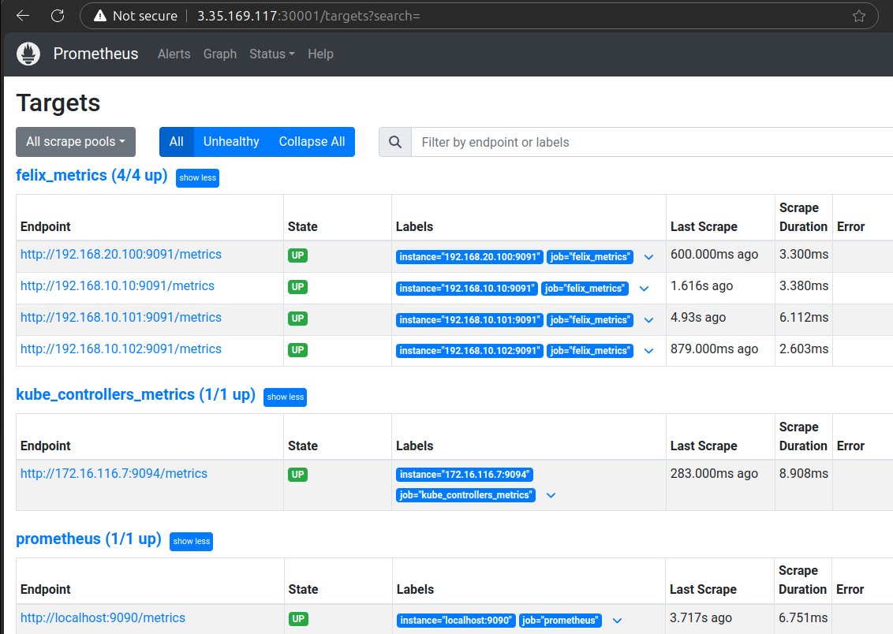

CloudNet@에서 진행하고 있는 K8s Advanced Network Study(이하, KANS)를 통해 학습한 내용을 정리합니다.
1. Calico 설치
스터디에서 AWS CF 및 Calico 설치 스크립트(Manifest)를 제공하였기에, 이 부분은 참고만 하시기 바랍니다.
CNI가 설치되지 않았기에 NotReady 상태에 있다가, Calico 설치하면 CoreDNS가 설정되며, Ready 상태로 변경된다.
-
Calico 설치 전
# Control Plane and worker nodes are not ready (⎈|HomeLab:default) root@k8s-m:~# kubectl get nodes NAME STATUS ROLES AGE VERSION k8s-m NotReady control-plane 32m v1.30.5 k8s-w0 NotReady <none> 31m v1.30.5 k8s-w1 NotReady <none> 31m v1.30.5 k8s-w2 NotReady <none> 31m v1.30.5 # Count for iptalbes rules for comparison (⎈|HomeLab:default) root@k8s-m:~# iptables -t filter -L | wc -l 50 (⎈|HomeLab:default) root@k8s-m:~# iptables -t nat -L | wc -l 48(⎈|HomeLab:default) root@k8s-m:~# kubectl get pod -A --sort-by=.metadata.creationTimestamp NAMESPACE NAME READY STATUS RESTARTS AGE kube-system etcd-k8s-m 1/1 Running 0 35m kube-system kube-apiserver-k8s-m 1/1 Running 0 35m kube-system kube-controller-manager-k8s-m 1/1 Running 0 35m kube-system kube-scheduler-k8s-m 1/1 Running 0 35m kube-system coredns-55cb58b774-bscbt 0/1 Pending 0 35m kube-system coredns-55cb58b774-w22zq 0/1 Pending 0 35m kube-system kube-proxy-5hgmn 1/1 Running 0 35m kube-system kube-proxy-bnv77 1/1 Running 0 35m kube-system kube-proxy-xf8q7 1/1 Running 0 35m kube-system kube-proxy-hzsnk 1/1 Running 0 35m -
Calico 설치 후
(⎈|HomeLab:default) root@k8s-m:~# kubectl get nodes NAME STATUS ROLES AGE VERSION k8s-m Ready control-plane 45m v1.30.5 k8s-w0 Ready <none> 45m v1.30.5 k8s-w1 Ready <none> 45m v1.30.5 k8s-w2 Ready <none> 45m v1.30.5 (⎈|HomeLab:default) root@k8s-m:~# iptables -t filter -L | wc -l 210 (⎈|HomeLab:default) root@k8s-m:~# iptables -t nat -L | wc -l 126(⎈|HomeLab:default) root@k8s-m:~# kubectl get pod -A --sort-by=.metadata.creationTimestamp NAMESPACE NAME READY STATUS RESTARTS AGE kube-system etcd-k8s-m 1/1 Running 0 37m kube-system kube-scheduler-k8s-m 1/1 Running 0 37m kube-system kube-controller-manager-k8s-m 1/1 Running 0 37m kube-system kube-apiserver-k8s-m 1/1 Running 0 37m kube-system coredns-55cb58b774-w22zq 1/1 Running 0 36m kube-system coredns-55cb58b774-bscbt 1/1 Running 0 36m kube-system kube-proxy-5hgmn 1/1 Running 0 36m kube-system kube-proxy-bnv77 1/1 Running 0 36m kube-system kube-proxy-xf8q7 1/1 Running 0 36m kube-system kube-proxy-hzsnk 1/1 Running 0 36m kube-system calico-node-xsqfv 1/1 Running 0 57s kube-system calico-node-ttxcv 1/1 Running 0 57s kube-system calico-node-6x5zq 1/1 Running 0 57s kube-system calico-kube-controllers-77d59654f4-vl8sv 1/1 Running 0 56s kube-system calico-node-cqjxm 1/1 Running 0 56s -
Calico 설치 스크립트를 통해 아래와 같은 변화가 주어집니다.
poddisruptionbudget.policy/calico-kube-controllers created serviceaccount/calico-kube-controllers created serviceaccount/calico-node created serviceaccount/calico-cni-plugin created configmap/calico-config created customresourcedefinition.apiextensions.k8s.io/bgpconfigurations.crd.projectcalico.org created customresourcedefinition.apiextensions.k8s.io/bgpfilters.crd.projectcalico.org created customresourcedefinition.apiextensions.k8s.io/bgppeers.crd.projectcalico.org created customresourcedefinition.apiextensions.k8s.io/blockaffinities.crd.projectcalico.org created customresourcedefinition.apiextensions.k8s.io/caliconodestatuses.crd.projectcalico.org created customresourcedefinition.apiextensions.k8s.io/clusterinformations.crd.projectcalico.org created customresourcedefinition.apiextensions.k8s.io/felixconfigurations.crd.projectcalico.org created customresourcedefinition.apiextensions.k8s.io/globalnetworkpolicies.crd.projectcalico.org created customresourcedefinition.apiextensions.k8s.io/globalnetworksets.crd.projectcalico.org created customresourcedefinition.apiextensions.k8s.io/hostendpoints.crd.projectcalico.org created customresourcedefinition.apiextensions.k8s.io/ipamblocks.crd.projectcalico.org created customresourcedefinition.apiextensions.k8s.io/ipamconfigs.crd.projectcalico.org created customresourcedefinition.apiextensions.k8s.io/ipamhandles.crd.projectcalico.org created customresourcedefinition.apiextensions.k8s.io/ippools.crd.projectcalico.org created customresourcedefinition.apiextensions.k8s.io/ipreservations.crd.projectcalico.org created customresourcedefinition.apiextensions.k8s.io/kubecontrollersconfigurations.crd.projectcalico.org created customresourcedefinition.apiextensions.k8s.io/networkpolicies.crd.projectcalico.org created customresourcedefinition.apiextensions.k8s.io/networksets.crd.projectcalico.org created clusterrole.rbac.authorization.k8s.io/calico-kube-controllers created clusterrole.rbac.authorization.k8s.io/calico-node created clusterrole.rbac.authorization.k8s.io/calico-cni-plugin created clusterrolebinding.rbac.authorization.k8s.io/calico-kube-controllers created clusterrolebinding.rbac.authorization.k8s.io/calico-node created clusterrolebinding.rbac.authorization.k8s.io/calico-cni-plugin created daemonset.apps/calico-node created deployment.apps/calico-kube-controllers created
(Optional) calicoctl 설치
이외에도 Calico 사용을 위해 calicoctl 을 설치했습니다.
이후에 Calico 메트릭을 p8s로 전송하기 위해 Calico에서 설정을 해야하는데, kubectl 대신 calicoctl을 사용해보기로 했습니다.
chmod +x calicoctl && mv calicoctl /usr/bin
calicoctl version
% Total % Received % Xferd Average Speed Time Time Time Current
Dload Upload Total Spent Left Speed
0 0 0 0 0 0 0 0 --:--:-- --:--:-- --:--:-- 0
100 64.4M 100 64.4M 0 0 21.2M 0 0:00:03 0:00:03 --:--:-- 40.4M
Client Version: v3.28.1
Git commit: 601856343
Cluster Version: v3.28.1
Cluster Type: k8s,bgp,kubeadm,kdd
2. Calico to Prometheus 연동
Docs: Tigera/Calico
Prometheus(이하, p8s)에 Calico 메트릭을 전송하기 위해 설정을 해야합니다.
Calico 문서에는 전송할 수 있는 3가지 요소에 대해서 설명하고 있습니다.
문서를 기반으로 의역해보면
- Felix: Calico의 두뇌라고 하는걸로 봐서는 핵심요소로 보입니다. Network Policy를 적용할 모든 머신에서 각각 구동되는 데몬이라고 합니다.
- Typha: Calico 노드와 Datastore 사이의 통신을 Felix에게 전달하도록 하는 Pods의 옵션 세트라고 합니다.
- kube-controllers: k8s API 돝기화를 비롯하여 가비지 리소스 수집 등 다양한 control-plane 기능을 담당하는 컨트롤러 세트를 실행하는 파드라고 합니다.
Felix 하나만 연결하면 그만일 줄 알았더니 그건 아닌 것 같습니다.
아래와 같이, 문서와 동일하게 진행해보겠습니다.
- (Calico) Metric Reporting 활성화
- (p8s) NS 및 SA 생성
- (p8s) 배포 및 구성
- (p8s) 대시보드에서 메트릭 확인 및 간단한 그래프 생성
calicoctl 및 Manifest 기준으로 기술합니다.
-
이후에는, 앞서 언급한 3가지의 요소의 설정을 수정하여, Felix의 메트릭을 exposed(노출되도록) 설정합니다.
다만 작업시, 유의해야할 것이 각자 사용 중인 기본 포트가 정해져 있다는 점입니다.Component Default Port Protocol Prerequisites Memo Felix 9091 TCP Y - Typha 9091 TCP N Default Setting Typha(Amazon) 9093 TCP N TYPHA_PROMETHEUS_METRICS_PORT kube-controllers 9094 TCP Y calico-kube-controllers -
특히, Typha의 경우, 위에 기술한 것과 같이 Amazon vpc-cni 설정에서 custom 포트가 별도 지정된다고 합니다. 다음 링크를 참조하시기 바랍니다. (Github/amazon-vpc-cni-k8s: v1.6-b001dc6)
Typha 도 활성하여 했으나, 선택사항이거니와 설치가 되어있지 않아 다루지 않습니다.
(1) Metric Reporting 활성화
기존 Felix 설정을 확인합니다. 기본값은 비활성화되어 있습니다. (아예 명시되어 있지 않습니다)
calicoctl get felixconfiguration -o yaml
a. Felix 메트릭 노출을 위한 활성화 및 svc 생성
calicoctl patch felixconfiguration default --patch '{"spec":{"prometheusMetricsEnabled": true}}'
# Successfully patched 1 'FelixConfiguration' resource
다시 확인합니다. (items.spec.prometheusMetricsEnabled: true)
calicoctl get felixconfiguration -o yaml | grep prom
# prometheusMetricsEnabled: true
Manifest로 Calico를 설칠했기 때문에, kube-system ns에 생성합니다.
cat <<EOF>felix.yaml
apiVersion: v1
kind: Service
metadata:
name: felix-metrics-svc
namespace: kube-system
spec:
clusterIP: None
selector:
k8s-app: calico-node
ports:
- port: 9091
targetPort: 9091
EOF
kubectl apply -f felix.yaml
# service/felix-metrics-svc created
kubectl get svc,ep -n kube-system felix-metrics-svc
# NAME TYPE CLUSTER-IP EXTERNAL-IP PORT(S) AGE
# service/felix-metrics-svc ClusterIP None <none> 9091/TCP 101s
# NAME ENDPOINTS AGE
# endpoints/felix-metrics-svc 192.168.10.10:9091,192.168.10.101:9091,192.168.10.102:9091 + 1 more... 101s
b. Typha 메트릭 노출을 위한 활성화 및 svc 생성
- Typha는 배포되지 않은 것으로 파악되어 생략합니다.
c. kube-controllers 메트릭 노출을 위한 svc 생성
현재 사용 중인 포트를 확인합니다. (tigera/calico: Kubernetes controllers configuration )
calicoctl get KubeControllersConfiguration -o yaml | grep prom
# prometheusMetricsPort: 9094
#
# calicoctl get kubecontollersconfiguration -o yaml
# Failed to get resources: resource type 'kubecontollersconfiguration' is not supported
(Opt.) calicoctl을 통해 해당 포트를 패치할 수 있습니다.
# custom port: 9095
calicoctl patch kubecontrollersconfiguration default --patch '{"spec":{"prometheusMetricsPort": 9095}}'
아래와 같이 서비스를 배포합니다.
해보니, 이미 있었고 기본값이라 바뀌지 않았다고 확인됩니다.
cat <<EOF>kube-controller.yaml
apiVersion: v1
kind: Service
metadata:
name: kube-controllers-metrics-svc
namespace: kube-system
spec:
clusterIP: None
selector:
k8s-app: calico-kube-controllers
ports:
- port: 9094
targetPort: 9094
EOF
kubectl apply -f kube-controller.yaml
(2) NS 및 SA 생성
- NS:
calico-monitoring - CR/SA/CRB:
calico-prometheus-user
cat <<EOF>calico-monitoring.yaml
apiVersion: v1
kind: Namespace
metadata:
name: calico-monitoring
labels:
app: ns-calico-monitoring
role: monitoring
EOF
kubectl apply -f calico-monitoring.yaml
cat <<EOF>calico-prometheus-user.yaml
apiVersion: rbac.authorization.k8s.io/v1
kind: ClusterRole
metadata:
name: calico-prometheus-user
rules:
- apiGroups: [""]
resources:
- endpoints
- services
- pods
verbs: ["get", "list", "watch"]
- nonResourceURLs: ["/metrics"]
verbs: ["get"]
---
apiVersion: v1
kind: ServiceAccount
metadata:
name: calico-prometheus-user
namespace: calico-monitoring
---
apiVersion: rbac.authorization.k8s.io/v1
kind: ClusterRoleBinding
metadata:
name: calico-prometheus-user
roleRef:
apiGroup: rbac.authorization.k8s.io
kind: ClusterRole
name: calico-prometheus-user
subjects:
- kind: ServiceAccount
name: calico-prometheus-user
namespace: calico-monitoring
EOF
kubectl apply -f calico-prometheus-user.yaml
# clusterrole.rbac.authorization.k8s.io/calico-prometheus-user created
# serviceaccount/calico-prometheus-user created
# clusterrolebinding.rbac.authorization.k8s.io/calico-prometheus-user created
(3) 배포 및 구성![
ConfigMap을 생성합니다.
cat <<EOF>prometheus-config.yaml
apiVersion: v1
kind: ConfigMap
metadata:
name: prometheus-config
namespace: calico-monitoring
data:
prometheus.yml: |-
global:
scrape_interval: 15s
external_labels:
monitor: 'tutorial-monitor'
scrape_configs:
- job_name: 'prometheus'
scrape_interval: 5s
static_configs:
- targets: ['localhost:9090']
- job_name: 'felix_metrics'
scrape_interval: 5s
scheme: http
kubernetes_sd_configs:
- role: endpoints
relabel_configs:
- source_labels: [__meta_kubernetes_service_name]
regex: felix-metrics-svc
replacement: $1
action: keep
- job_name: 'felix_windows_metrics'
scrape_interval: 5s
scheme: http
kubernetes_sd_configs:
- role: endpoints
relabel_configs:
- source_labels: [__meta_kubernetes_service_name]
regex: felix-windows-metrics-svc
replacement: $1
action: keep
- job_name: 'typha_metrics'
scrape_interval: 5s
scheme: http
kubernetes_sd_configs:
- role: endpoints
relabel_configs:
- source_labels: [__meta_kubernetes_service_name]
regex: typha-metrics-svc
replacement: $1
action: keep
- job_name: 'kube_controllers_metrics'
scrape_interval: 5s
scheme: http
kubernetes_sd_configs:
- role: endpoints
relabel_configs:
- source_labels: [__meta_kubernetes_service_name]
regex: kube-controllers-metrics-svc
replacement: $1
action: keep
EOF
kubectl apply -f prometheus-config.yaml
Calico를 수집할 Prometheus를 배포합니다.
앞에서 Calico 메트릭을 수집하고, 유효한 ConfigMap을 생성하였습니다.
cat <<EOF>prometheus-pod.yaml
apiVersion: v1
kind: Pod
metadata:
name: prometheus-pod
namespace: calico-monitoring
labels:
app: prometheus-pod
role: monitoring
spec:
nodeSelector:
kubernetes.io/os: linux
serviceAccountName: calico-prometheus-user
containers:
- name: prometheus-pod
image: prom/prometheus
resources:
limits:
memory: "128Mi"
cpu: "500m"
volumeMounts:
- name: config-volume
mountPath: /etc/prometheus/prometheus.yml
subPath: prometheus.yml
ports:
- containerPort: 9090
volumes:
- name: config-volume
configMap:
name: prometheus-config
EOF
kubectl apply -f prometheus-pod.yaml
정상적으로 구동되는 지 확인합니다.
kubectl get pods prometheus-pod -n calico-monitoring
# NAME READY STATUS RESTARTS AGE
# prometheus-pod 1/1 Running 0 14s
(4) 대시보드에서 메트릭 확인 및 간단한 그래프 생성
문서에서는 port-forward를 통해 확인하도록 하지만, AWS EC2에 구축했기에 확인하기가 어렵습니다.
kubectl port-forward pod/prometheus-pod 9090:9090 -n calico-monitoring
스터디에서 안내된 방법으로, 확인해보겠습니다.
a. Pod IP를 확인합니다.
/graph: 대시보드/metrics: Grafana 등 p8s 기반 시각화를 위한 메트릭 정보
kubectl get pods prometheus-pod -n calico-monitoring -owide | grep -Eo "([0-9]{1,3}[\.]){3}[0-9]{1,3}"
# 172.16.184.8
# curl 172.16.184.8:9090
# <a href="/graph">Found</a>.
b. NodePort svc를 생성합니다. (외부접속)
cat <<EOF>prometheus-dashboard-svc.yaml
apiVersion: v1
kind: Service
metadata:
name: prometheus-dashboard-svc
namespace: calico-monitoring
spec:
type: NodePort
selector:
app: prometheus-pod
role: monitoring
ports:
- protocol: TCP
port: 9090
targetPort: 9090
nodePort: 30001
EOF
kubectl apply -f prometheus-dashboard-svc.yaml
kubectl get svc,ep -n calico-monitoring
# NAME TYPE CLUSTER-IP EXTERNAL-IP PORT(S) AGE
# service/prometheus-dashboard-svc NodePort 10.200.1.45 <none> 9090:30001/TCP 0s
# NAME ENDPOINTS AGE
# endpoints/prometheus-dashboard-svc 172.16.184.8:9090 0s
아래 커맨드를 쳐서 나오는 URL로 웹 브라우저에서 확인을 합니다.
echo -e "Prometheus URL = http://$(curl -s ipinfo.io/ip):30001/graph"
# Prometheus URL = http://3.35.169.117:30001/graph
Target에서 felix_metrics가 잡힌 것을 확인하였습니다.


kkumtree
Source code on GitHub
© 2025 kkumtree and contributors All rights reserved.
Licensed under
CC BY-NC-ND 4.0